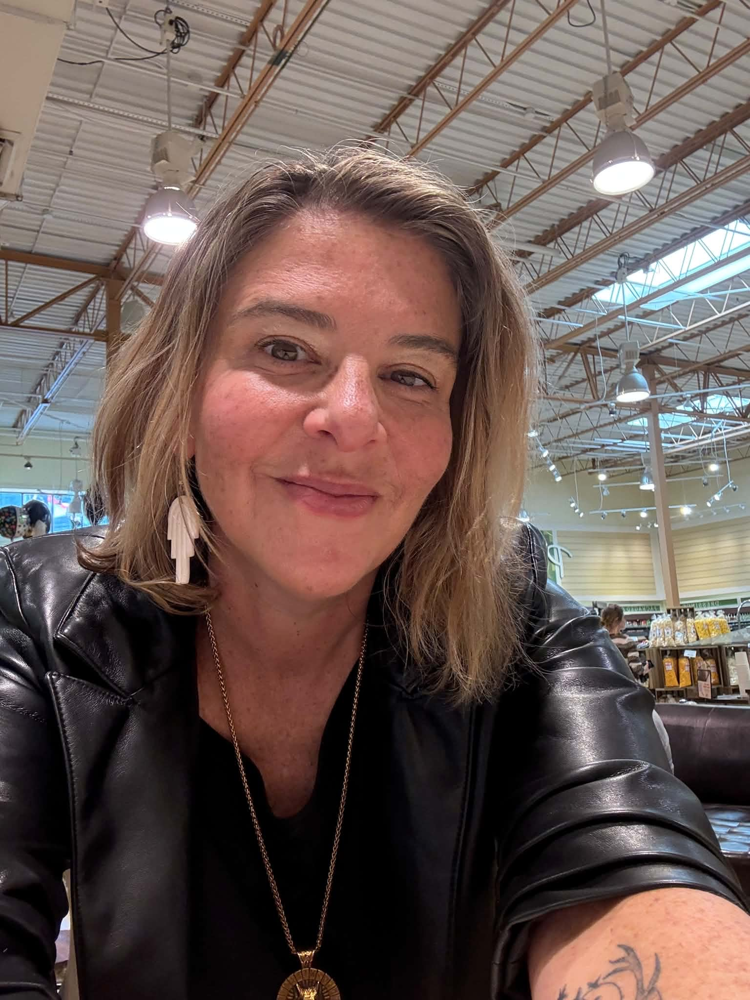

Art Practice
Earth-toned, symbolic, and textural works shaped by landscape, mythology, ecology, and personal transformation.
Explore Artwork →
Artist. Educator. Researcher. Guide.
Rooted in myth, land, and the work of transformation.

Dr. Kate Wurtzel is an artist, educator, and researcher who has taught in museums, public schools, and higher education. After working as an elementary art teacher for several years, and working as a museum educator for nine years, she obtained a PhD in Art Education from the University of North Texas.
Dr. Wurtzel currently continues her work by adjuncting for various universities in both art education and studio practices, holding community workshops, and maintaining an active art-making practice.
Currently Dr. Wurtzel is working as an independent scholar investigating how place-based embodied learning experiences increase compassion for certain environments and calls for spaces of creative-repair.
This includes the investigation of ecological concerns and questioning how one finds connection to environments and to the body through creative action in our distressed world.
Curriculum Vitae
A detailed record of Dr. Wurtzel's academic work, teaching experience, exhibitions, publications, and professional practice.
View CV PDFEarth-toned, symbolic, and textural works shaped by landscape, mythology, ecology, and personal transformation.
Explore Artwork →Academic and reflective writing grounded in art, philosophy, empowerment, ecology, and the movement of ideas through lived experience.
Read Writing →Guided creative spaces for reflection, growth, making, and reconnection with self, community, and place.
Explore Workshops →